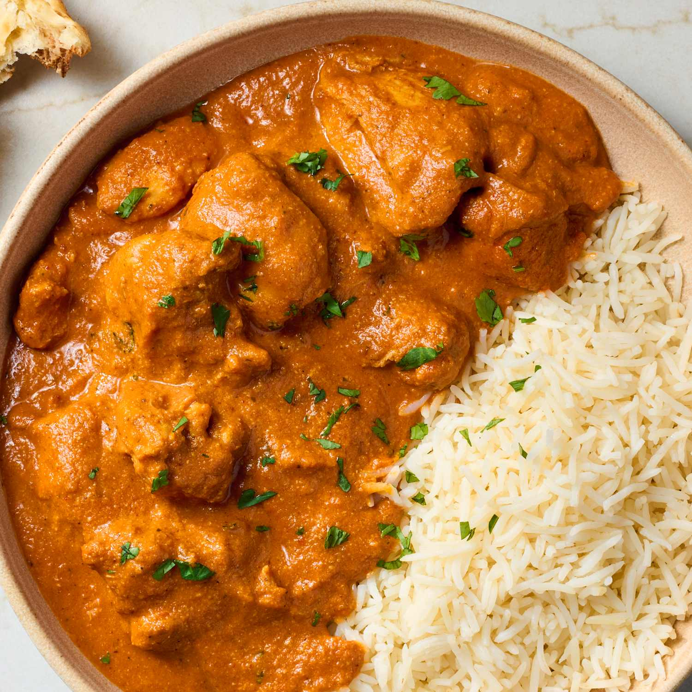

Butter Chicken
Home

Description
Butter chicken is a beloved Indian dish featuring tender chicken in a rich, creamy tomato sauce with warm spices. This simplified version delivers authentic flavors without requiring hard-to-find ingredients or hours of cooking time.
Ingrediants
- 1.5 lbs boneless chicken thighs, cut into bite-sized pieces
- 3 tablespoons butter
- 1 onion, finely chopped
- 3 cloves garlic, minced
- 1 tablespoon ginger, minced
- 2 teaspoons garam masala
- 1 teaspoon cumin
- 1 teaspoon paprika
- 1/2 teaspoon turmeric
- 1 can (14 oz) crushed tomatoes
- 1 cup heavy cream
- 1 tablespoon sugar
- Salt to taste
- Fresh cilantro for garnish
Steps
- Melt 2 tablespoons of butter in a large skillet over medium-high heat. Add the chicken pieces and cook until browned on all sides, about 5-6 minutes. Remove and set aside.
- In the same skillet, add the remaining butter and sauté the onion until softened, about 4 minutes. Add garlic and ginger, cooking for another minute until fragrant.
- Stir in all the spices (garam masala, cumin, paprika, turmeric) and cook for 30 seconds to toast them.
- Pour in the crushed tomatoes and sugar. Simmer for 8-10 minutes, stirring occasionally, until the sauce thickens slightly.
- Return the chicken to the skillet and stir in the heavy cream. Simmer for another 5-7 minutes until the chicken is cooked through. Season with salt to taste.
- Garnish with fresh cilantro and serve hot over basmati rice or with naan bread.